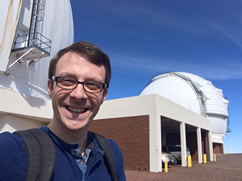
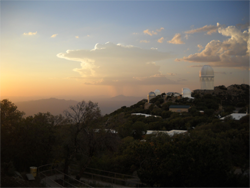
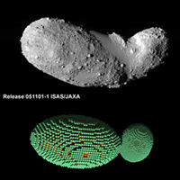

Brett M. Morris |
Research Interests |
Giant Exoplanet Transmission Spectroscopy with Keck/MOSFIRE in the Near-Infrared (2013-present at UW)
with Dr. Avi Mandell (NASA GSFC) and Daniel Angerhausen (NASA GSFC)
Since my post-baccalaureate position at NASA Goddard I have been working to use Keck's
near-infrared multiobject spectrograph MOSFIRE to do do transit transmission
spectroscopy of exoplanet atmospheres. My collaborators and I have developed observing techniques and
data reduction and analysis pipelines for MOSFIRE observations and have built
exposure time calculators for exoplanet characterization with MOSFIRE that demonstrate the promise of
ground-based transmission spectroscopy in the near-infrared.
In 2014 I was principal investigator on a two night run on MOSFIRE (N132M)
with my NASA collaborators. We observed a pair of twin hot-Jupiters
that each have similar masses, radii and effective temperatures but host stars
with metallicities that differ by a factor of three. Using transit
transmission spectroscopy, we intend to show that the metallicity difference
of the planets can be detected with spectroscopy from the ground.
Photometry of Transiting Extrasolar Planets with Kepler, the Hale Telescope (Palomar Observatory) and the 2.1 m at Kitt Peak National Observatory (2012-2013 at UMD and NASA GSFC)
{kind=link}
with Professor Drake Deming (UMD) and Dr. Avi Mandell (NASA GSFC)
I worked with public Kepler data and ground based observations from the Palomar and Kitt Peak Observatories
in June 2012, beginning during my time as a Research Associate in the Goddard Center
for Astrobiology at NASA's Goddard Space Flight Center. I study extrasolar planet HAT-P-7 b, a
hot Jupiter that orbits its star at a distance of only four stellar radii. I worked with observations from
the Palomar Observatory's Hale Telescope to search for the secondary eclipse in the K-band.
By compiling all of the available Kepler observations, I resolved photometric features in
the light curves consistent with planet-induced stellar gravity darkening, in which the
tidal distortion of the star due to the planet causes a decrease in the surface gravity near the
sub-planet point, resulting in a corresponding decrease in stellar surface brightness.
I wrote a Letter on this work in ApJ Letters in 2013, view it here.
I also travelled to Kitt Peak National Observatory as a co-investigator for a week of observing time in June 2012 to
observe exoplanet transits on the 2.1 m with Professor Pedro Sada (U de M). The picture above shows the view I enjoyed
from the 2.1 m at sunset during monsoon season.
Honors Thesis: Numerical Simulations of Rotational Fission of Contact Binary Asteroids (UMD)
with Professor Derek C. Richardson (UMD)
I was nominated for Departmental Honors in 2011 and I defended my thesis in May 2012. My project investigates the analytically derived relative configurations of contact binary asteroids that are spun-up by continous torques such as the YORP effect. I developed a Python-based initial conditions generator to model a variety of asteroid geometries with accurate moments of inertia and symmetry for comparison with analytical studies on idealized asteroid bodies. I interfaced with an N-body gravity integrator called pkdgrav and used more than 4 years of CPU time on our campus' high performance computing centers.
Photometric Studies at the University of Maryland Observatory (2010-2013 at UMD)
Transiting Exoplanet Observations
I have worked on various projects at the University of Maryland Observatory (UMO) since the summer of 2011.
That summer I worked on my honors thesis during the day, and by night I developed my own observing techniques and
original differential photometry code to become the first person to detect extrasolar planets at UMO. Since then,
I have collected transit photometry for >10 exoplanets and released an
open source version of my photometry code, OSCAAR
. Some of my observations have been submitted to the
Exoplanet Transit Database
maintained by the Czech Astronomical Society to help constrain ephemerides. My publication
Observations of Transiting Exoplanets with Differential
Photometry
was accepted to the Scientific Terrapin, a research journal at the University of Maryland,
in the Fall of 2011 (p. 18-24).
Asteroid Observations
I have used my photometry code to study asteroids as well. In Febraury 2011, there was a season of mutual
eclipse events for binary asteroid Kalliope and its satellite Linus. I measured photometry of the system
on two nights to measure the decrease in brightness when Linus' shadow passed over Kalliope. My results were
featured in the presentation at Asteroids Comets and Meteors in Japan (2012). Read the talk's abstract, entitled
Physical and orbital properties
of the (22) Kalliope system from mutual eclipse observations.
Publications
- Morris, B.M., Mandell, A.M., Deming, L.D..
Kepler's Optical Secondary Eclipse of HAT-P-7b and Probable Detection of Planet-Induced Stellar Gravity Darkening.
ApJL, accepted (Jan 18, 2013). - Morris, B.M.
Observations of Transiting Exoplanets with Differential Photometry
. Scientific Terrapin, Vol. III, Issue I. Fall 2011.
(Viewable) Presentations
- Poster:
Kepler's Optical Secondary Eclipse Of HAT-P-7b And Probable Detection Of Planet-Induced Stellar Gravity Darkening.
The Second Kepler Science Conference. NASA Ames Research Center, Mountain View, CA. November 2013. - Talk:
Kepler's Optical Secondary Eclipse of HAT-P-7b and Probable Detection of Planet-Induced Stellar Gravity Darkening.
AbGradCon 2013. McGill University, Montreal, Canada. June, 2013. - Poster:
Differential Photometry with OSCAAR: Open Source Differential Photometry Code for Amateur Astronomical Research.
222nd American Astronomical Society Meeting (AAS). Indianapolis, IN. June 2013. - Talk:
Secondary Eclipse and Transiting Timing of Extra-Solar Planet HAT-P-7 b.
2012 NASA Goddard Space Flight Center Summer Research Associate Symposium. Goddard Space Flight Center, Greenbelt, MD, August 9, 2012. - Abstract: Springmann, S.,
Dalba, P., Marchis, F., Vachier, F., Berthier, J., Descamps, P., Morris B., Marciniak, A., Ros, S.,
Kryszczynska, A.
Physical and orbital properties of the (22) Kalliope system from mutual eclipse observations.
Asteroids, Comets, Meteors. Japan, 2012.